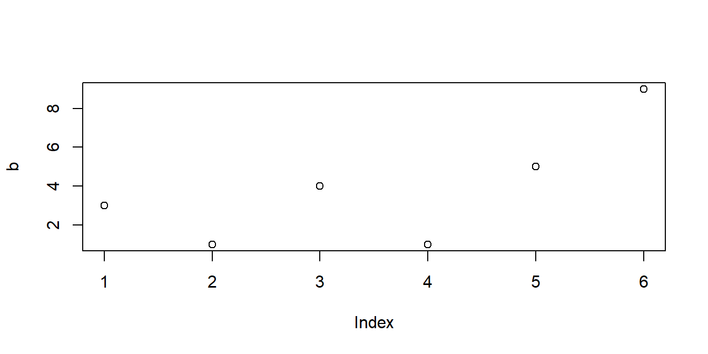
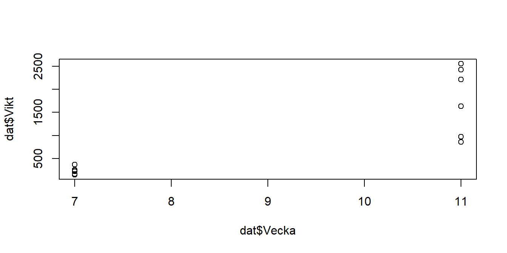
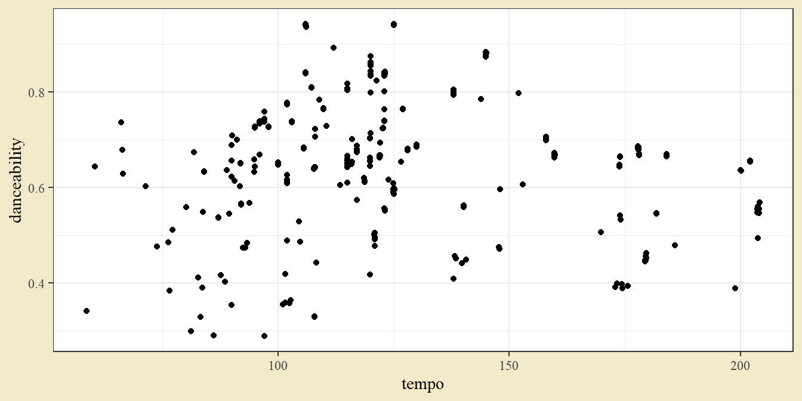
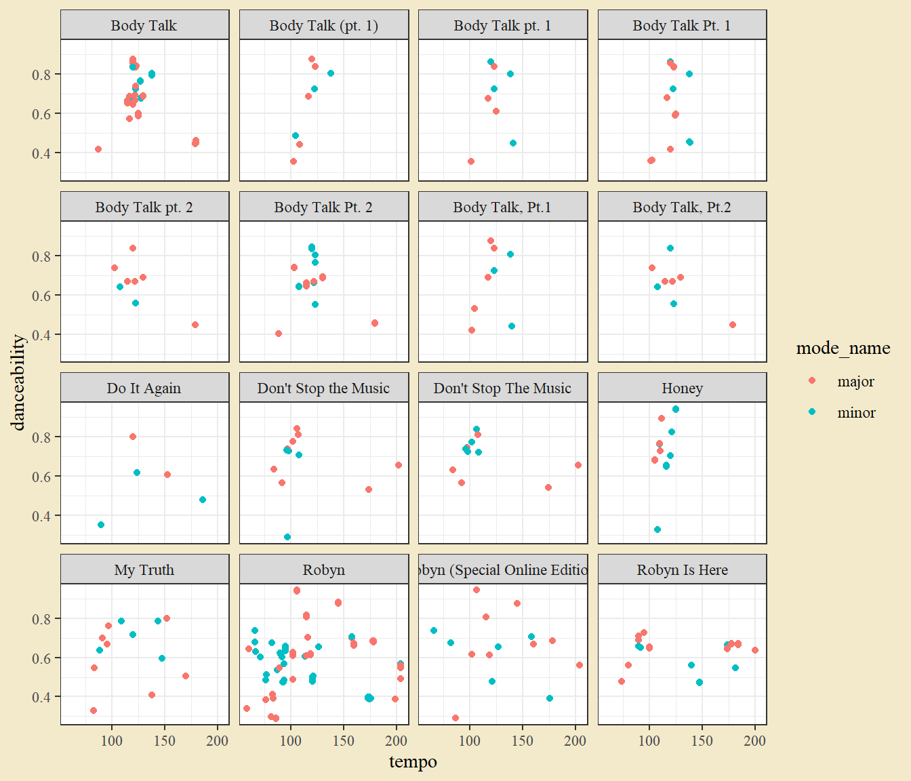
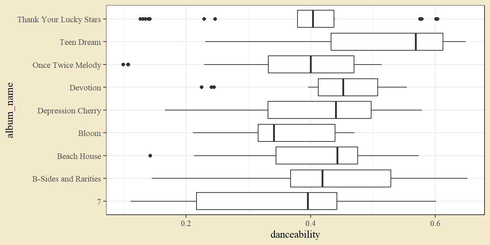
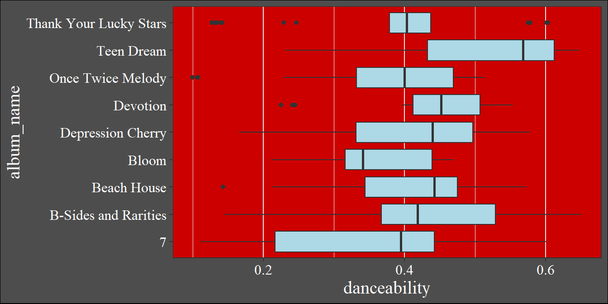
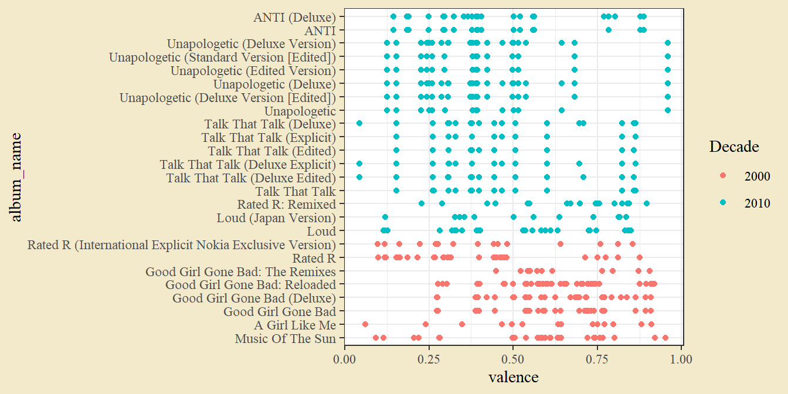
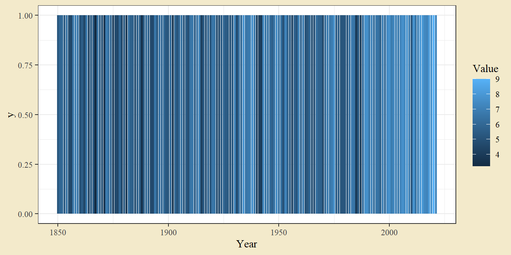

1 Datahantering och grafer
Datorövning 1 handlar om grunderna till R. Efter övningen ska vi kunna
Starta RStudio och orientera oss i gränssnittet,
Installera och ladda tilläggspaket (Packages),
Definera objekt och tillämpa funktioner i R,
Importera data från en online-källa,
Transformera en tabell med data genom att välja kolumner, filtrera rader och summera per grupp,
Skapa grafer med
ggplot2.
1.1 Uppstart och orientering
För att arbeta i R måste vi installera språket R och ett gränssnitt för att arbeta i R, vanligen RStudio. Titta på kapitlet Installation om programmen inte är installerade på ditt system.
Starta RStudio, till exempel genom att gå till Startmenyn och söka på RStudio eller genom att dubbelklicka på en fil som öppnas i RStudio. Gränssnittet i RStudio är uppdelat i fyra delar och varje del består av en eller flera flikar. De viktigaste är i nuläget
- Console där kod körs och resultat skrivs ut,
- Environment där man ser skapade objekt,
- History där man ser tidigare körd kod,
- Plots där man ser skapade grafer, och
- Help där man ser hjälpsidor för funktioner.
Uppgift 1.1 (Help-fliken) Hitta fliken Help, klicka på husikonen under fliken. Finns det en länk med RStudio Cheat Sheets? Följ den länken för att hitta guider till R som kan bli nyttiga längre fram. För nu, gå tillbaka till RStudio.
Ofta skriver man inte sin kod direkt i konsollen, utan i ett separat skript - en vanlig textfil som innehåller den kod man vill köra. Genom att organisera sin kod i ett skript kan man lätt strukturera och dokumentera sitt arbete. I RStudio kan man öppna ett nytt skript genom att gå till File > New File > R Script eller genom att klicka Ctrl + Shift + N. Ett tomt skript öppnar sig då i det övre vänstra delfönstret. Om du läser det här i RStudio, genom att ha laddat ner .R-filen, läser du just nu ett skript.
Uppgift 1.2 (Ett första skript) Öppna ett nytt skript genom File-menyn eller genom Ctrl + Shift + N. Skriv
i skriptet och tryck Ctrl + Enter. Titta i flikarna Console och Environment. Har något hänt? Du bör se att koden i skriptet körts i konsollen och att ett nytt objekt a ligger i Environment.
1.2 Packages från CRAN
En av de stora styrkorna med R är att språket kan byggas ut av dess användare. De här tilläggen kan sedan samlas i paket (packages) och delas med andra. Rs officiella bibliotek för paket kallas för CRAN (Comprehensive R Archive Network) och består av mer än 18 000 uppladdade paket som innehåller allt från fritt tillgänglig data till avancerade statistiska modeller.
För att använda ett specifikt paket måste det först installeras. Om man vet namnet på paketet man vill installera kan man köra
I det här fallet installeras paketet tidyverse, vilket innehåller funktioner för hantering av data.
I RStudio kan man också installera paket från Packages-fliken.
Uppgift 1.3 (Installera tidyverse-paketet) Kör raden ovan för att installera tidyverse. Du kan antingen köra raden genom att skriva den i Console eller genom att skriva i ett skript och köra därifrån genom Ctrl + Enter.
Uppgift 1.4 (Installera gapminder-paketet) Paketet gapminder innehåller lite intressant data vi kommer använda senare. Installera paketet gapminder genom att fylla i och köra raden nedan.
Paket måste också laddas för varje ny session. Innan man kan använda innehållet i ett paket måste man därför köra
Uppgift 1.5 (Ladda gapminder-paketet) Ladda paketet gapminder genom att fylla i och köra raden nedan.
1.3 Objekt och funktioner
Ett objekt i R är en namngiven informationsmängd. Objekt kan se ut på många olika sätt - under kursens gång används objekt som består av insamlad data (konstruerade som vektorer eller tabeller), objekt som är statistiska modeller, och flera andra former. I R skapar man objekt med assign-pilen <- (mindre än och bindestreck).
I ett tidigare exempel fanns raden
Här skapas ett objekt med namnet a som innehåller informationen 5. Assign-pilen pekar alltså på det namn man vill ge objektet och pekar från objektets innehåll.
Ett lite mer komplicerat exempel på ett objekt ges av
Här skapas ett objekt b som innehåller en serie numeriska värden (en vektor). Värdena i en vektor är ordnade och man kan plocka ut ett specifikt värde med hakparenteser.
## [1] 4## [1] 4 5Uppgift 1.7 (Skapa en vektor) Skapa ett objekt med namnet new_vector som innehåller värden 5, 7 och 10 genom att fylla i följande rad.
Uppgift 1.8 (Ta ut andra värdet) Använd hakparenteser för att plocka ut det andra värdet ur vektorn new_vector.
Objekt kan manipuleras genom att tillämpa funktioner. En funktion tar någon ingående data och ger något utgående resultat. Funktioner anges genom att skriva funktionens namn följt av ingående data inom parenteser, och resultatet kan antingen skrivas ut i konsollen eller sparas som ett nytt objekt. En grundinstallation av R innehåller en mängd färdiga funktioner, t.ex.
## [1] 23vilket ger summan av värdena i vektorn b,

som ger en simpel graf, och
## [1] 1.732051 1.000000 2.000000 1.000000 2.236068 3.000000som beräknar kvadratroten för varje element i vektorn.
Uppgift 1.9 (Summera vektorn) Fyll i och kör följande rad för att beräkna summan av vektorn new_vector
Vid konstruktionen av vektorn användes också en grundläggande funktion - funktionen c(), som tar en serie värden och skapar en sammanhängande vektor av värden.
Alla R-funktioner har en tillhörande hjälpfil som kan plockas fram genom att skriva frågetecken följt av funktionsnamnet, t.ex. ?sum. Från hjälpfilen får man att sum() tar numeriska vektorer som ingående värde och beräknar summan. Man kan styra funktionens beteende genom att sätta ett argument na.rm (vilket här styr hur funktionen hanterar saknade värden). Som illustration kan man titta på
b <- c(3, 1, 4, 1, 5, 9, NA) # Lägger till ett saknat värde
sum(b) # na.rm = FALSE är grundinställning## [1] NA## [1] 23Det första försöket sum(b) ger utfallet NA, men om man sätter na.rm = TRUE beräknas summan efter att det saknade värdet plockats bort. Notera också att skript kan kommenteras med #.
1.4 Sekvenser av funktioner
Ofta vill man genomföra flera operationer på ett objekt. Man behöver då genomföra en sekvens av funktioner. Säg till exempel att man har värdena \[(-4, -2, -1, 1, 2, 4)\] och vill ta absolutvärde (vilket gör negativa tal till motsvarande positiva tal) och sedan summera. Den typen av sekvenser kan genomföras på ett par olika sätt. Ett första sätt är att spara resultatet i varje steg och sedan använda utfallet i nästa steg:
c <- c(-4, -2, -1, 1, 2, 4) # Skapa en vektor av värden
c_absolute <- abs(c) # Ta absolutvärden. Spara som c_absolut
sum(c_absolute) # Summera värden i c_absolut## [1] 14Här skapas ett objekt c som innehåller en vektor där några tal är negativa. I nästa rad används abs för att skapa absolutvärden. Slutligen summeras absolutvärdena med sum.
Notera att det är möjligt att skapa ett objekt med namnet c trots att det redan är namnet på en funktion - R förstår ur sammanhanget om objektet eller funktionen ska användas. Det kan dock bli lite oklart för en läsare, så försök som regel att undvika att skapa objekt med vanliga funktionsnamn som sum och mean.
Uppgift 1.10 (Kvadrat, summa och roten ur) Fyll i och kör följande rader för att ta varje värde i new_vector i kvadrat, sedan summera, och sedan ta roten ur.
Ett alternativ till att spara utfallet i varje steg är att skriva en senare funktion runt en tidigare funktion. Det fungerar för att R utvärderar funktioner inifrån-ut. Med samma exempel som tidigare får man
medan beräkningen i övningen blir
Den här typen av skrivning kan spara plats men blir snabbt svårläst.
Ett sista alternativ är att använda en så kallad pipe (namnet kommer från att en sekvens funktioner kallas en pipeline). En pipe skrivs %>% och kan i RStudio tas fram med kortkommandon Ctrl + Shift + M. Pipen tar utfallet av en funktion till vänster och sänder till en funktion till höger. Den kan utläsas i dagligt tal som och sen. Med samma exempel som tidigare kan vi skriva
library(tidyverse) # Ladda tidyverse, ej nödvändigt om redan gjort
c(-4, -2, -1, 1, 2, 4) %>% # Skapa en datamängd och sen
abs() %>% # ta absolutvärden, och sen
sum() # beräkna summan.## [1] 14Uppgift 1.11 (Kvadrat, summa och rot med pipe) Fyll i de saknade funktionerna och kör följande rader för att ta varje värde i new_vector i kvadrat, sedan summera, och sedan ta roten ur, denna gång genom att länka funktionerna med en pipe %>%.
1.5 Datainskrivning och dataimport från web
1.5.1 Inskrivning av data
Det första praktiska steget i en statistisk analys är att importera data. I R kan det göras genom att direkt skriva in sin data och spara som ett nytt objekt, men ett bättre och vanligare sätt är att importera sin data från en extern fil eller databas.
I ett tidigare exempel användes funktionen c för att skapa en vektor av data. Ofta ordnas flera vektorer i en tabell där varje kolumn är en vektor och varje rad en observation av någon enhet. En datatabell (en data.frame i R) skapas genom funktionen data.frame() följt av namngivna vektorer. Exempeldata kan skrivas in genom föjande.
dat <- data.frame(Vecka = c(7,7,7,7,7,7,11,11,11,11,11,11),
Behandling = c("A","A","A","B","B","B","A","A","A","B","B","B"),
Vikt = c(232,161,148,368,218,257,1633,2213,972,2560,2430,855),
N = c(2.63,2.90,2.99,3.54,3.30,2.85,1.53,1.90,NA,2.58,NA,NA))
dat## Vecka Behandling Vikt N
## 1 7 A 232 2.63
## 2 7 A 161 2.90
## 3 7 A 148 2.99
## 4 7 B 368 3.54
## 5 7 B 218 3.30
## 6 7 B 257 2.85
## 7 11 A 1633 1.53
## 8 11 A 2213 1.90
## 9 11 A 972 NA
## 10 11 B 2560 2.58
## 11 11 B 2430 NA
## 12 11 B 855 NARadbrytningar och blanksteg är oviktiga i R, och används bara för läsbarhet här. Saknade värden skrivs in som NA för not available. Notera att alla kolumner inte behöver vara av samma datatyp men att värden inom en kolumn måste vara det. Här är Behandling text medan övriga kolumner är numeriska.
Uppgift 1.12 (Alea iacta est) Kasta din tärning tio gånger och skriv in resultatet i en datatabell i R med hjälp av grundkoden nedan. Om du saknar en tärning, fråga lämplig person om du kan få en. Behåll tärningen, den behövs till nästa datorövning (och närhelst man står inför ett avgörande livsbeslut).
Objektet dat är av typen data.frame - en tabell med rader och kolumner. Man kan ange en specifik kolumn i en data.frame med dollartecken följt av kolumnens namn.
## [1] 232 161 148 368 218 257 1633 2213 972 2560 2430 855Man kan också plocka ut rader och kolumner med hakparenteser och ordningstal.
## [1] 161## Vecka Behandling Vikt N
## 2 7 A 161 2.9## [1] 232 161 148 368 218 257 1633 2213 972 2560 2430 855Uppgift 1.13 (Plocka ut en specifik kolumn) I den tidigare övningen skapade du ett objekt dat_dice. Använd dollartecken för att plocka ut kolumnen Utfall från det objektet.
Genom att plocka ut en kolumn från en data.frame kan man beräkna vanlig beskrivande statistik med funktioner som mean() (medelvärde) och sd() (standardavvikelsen).
## [1] 1003.917## [1] 951.3067Funktionen plot() ger en enkel graf.

1.5.2 Import från en extern fil
Inskrivning av värden är ofta tidskrävande och kan lätt leda till misstag. Det är därför mycket vanligare att data läses in från en extern fil. Det finns en mängd funktioner för dataimport och det exakta valet av funktion beror på vilken typ av fil datan är sparad i. Ett vanligt filformat är .csv (comma separated values). Här importerar vi en fil med data från Spotify. Filen ligger på Github, en populär sida för lagring av filer och kod.
dat <- read_csv("https://raw.githubusercontent.com/adamflr/ST0060-2022/main/Data/Spotify_data.csv")
# Läs in en csv-fil från Github
dat # Skriv ut objektet dat## # A tibble: 89,105 × 24
## artist_name album_name track_number track_name album_type album_release_date
## <chr> <chr> <dbl> <chr> <chr> <chr>
## 1 100 gecs 1000 gecs … 1 money mac… album 2020-07-10
## 2 100 gecs 1000 gecs … 2 ringtone … album 2020-07-10
## 3 100 gecs 1000 gecs … 3 745 stick… album 2020-07-10
## 4 100 gecs 1000 gecs … 4 gec 2 Ü (… album 2020-07-10
## 5 100 gecs 1000 gecs … 5 hand crus… album 2020-07-10
## 6 100 gecs 1000 gecs … 6 800db clo… album 2020-07-10
## 7 100 gecs 1000 gecs … 7 stupid ho… album 2020-07-10
## 8 100 gecs 1000 gecs … 8 ringtone … album 2020-07-10
## 9 100 gecs 1000 gecs … 9 xXXi_wud_… album 2020-07-10
## 10 100 gecs 1000 gecs … 10 745 stick… album 2020-07-10
## # ℹ 89,095 more rows
## # ℹ 18 more variables: album_release_year <dbl>, danceability <dbl>,
## # energy <dbl>, key <dbl>, loudness <dbl>, mode <dbl>, speechiness <dbl>,
## # acousticness <dbl>, instrumentalness <dbl>, liveness <dbl>, valence <dbl>,
## # tempo <dbl>, time_signature <dbl>, explicit <lgl>, type <chr>,
## # key_name <chr>, mode_name <chr>, key_mode <chr>Om importen fungerat kan man skriva ut tabellens översta rader genom att köra objektets namn.
För att snabbt se vilka artister datan täcker kan man köra
där unique är en funktion som tar bort alla dubletter och dat$artist_name används för att plocka ut kolumnen artist_name ur tabellen dat.
1.6 Urval ur en tabell med select och filter
En vanlig operation på en tabell är att göra ett urval - antingen ett urval av rader (t.ex. en viss artist), vilket kallas filtrering eller ett urval av variabler (t.ex. artist och albumnamn), vilket kallas selektion. Det finns flera olika sätt att göra ett urval i R. Det traditionella sättet är att använda index inom hakparenteser (t.ex. dat[4, 2] för fjärde raden, andra kolumnen) eller dollartecken för specifika kolumner (t.ex. dat$artist_name för artistnamn). Här fokuseras dock på hur det kan göras med funktionerna filter() och select() från paketet tidyverse.
För att filtrera på ett givet land kan använda pipe-funktionen från datan till en filter-funktion, t.ex.
## # A tibble: 1,141 × 24
## artist_name album_name track_number track_name album_type album_release_date
## <chr> <chr> <dbl> <chr> <chr> <chr>
## 1 Robyn Honey 1 Missing U album 2018-10-26
## 2 Robyn Honey 2 Human Being album 2018-10-26
## 3 Robyn Honey 3 Because It… album 2018-10-26
## 4 Robyn Honey 4 Baby Forgi… album 2018-10-26
## 5 Robyn Honey 5 Send To Ro… album 2018-10-26
## 6 Robyn Honey 6 Honey album 2018-10-26
## 7 Robyn Honey 7 Between Th… album 2018-10-26
## 8 Robyn Honey 8 Beach2k20 album 2018-10-26
## 9 Robyn Honey 9 Ever Again album 2018-10-26
## 10 Robyn Honey 1 Missing U album 2018-10-26
## # ℹ 1,131 more rows
## # ℹ 18 more variables: album_release_year <dbl>, danceability <dbl>,
## # energy <dbl>, key <dbl>, loudness <dbl>, mode <dbl>, speechiness <dbl>,
## # acousticness <dbl>, instrumentalness <dbl>, liveness <dbl>, valence <dbl>,
## # tempo <dbl>, time_signature <dbl>, explicit <lgl>, type <chr>,
## # key_name <chr>, mode_name <chr>, key_mode <chr>Inom filterfunktionen anges ett logisk villkor country == "Sweden" och utfallet är de rader där villkoret är sant. Notera de dubbla likhetstecknen - de måste användas för ett logisk villkor eftersom enkelt likhetstecken används för att skapa objekt och sätta funktionsargument.
Uppgift 1.15 (Filtrera för artist) Vad måste ändras i koden för att istället plocka ut rader där artisten är Esperanza Spalding? Hur många rader har det urvalet i datan?
Om man vill välja flera artister kan man använda funktionen %in% på ett liknande sätt.
dat %>% # Ta datan, och sen
filter(artist_name %in% c("Robyn", "Esperanza Spalding")) # filtrera för specifika artisteroch om man vill ha mer än ett villkor kan man rada dem i filter-funktionen eller ha flera filter-steg:
dat %>% # Ta datan, och sen
filter(artist_name %in% c("Robyn", "Esperanza Spalding"), # filtrera för specifika artister
key_name == "D#") # och för tonartalternativt
dat %>% # Ta datan, och sen
filter(artist_name %in% c("Robyn", "Esperanza Spalding")) %>% # filtrera för artister, och sen
filter(key_name == "D#") # filtrera för tonartFör att se fler eller färre rader kan man använda en pipe %>% till funktionen print(). Följande skriver ut fem rader
dat %>% # Ta datan, och sen
filter(artist_name %in% c("Robyn", "Esperanza Spalding")) %>% # filtrera för artister, och sen
filter(key_name == "D#") %>% # filtrera för tonart, och sen
print(n = 5) # skriv ut de fem första raderna## # A tibble: 21 × 24
## artist_name album_name track_number track_name album_type album_release_date
## <chr> <chr> <dbl> <chr> <chr> <chr>
## 1 Esperanza Sp… SONGWRIGH… 7 Formwela 7 album 2021-09-24
## 2 Esperanza Sp… 12 Little… 2 To Tide U… album 2019-05-10
## 3 Esperanza Sp… 12 Little… 3 'Til the … album 2019-05-10
## 4 Esperanza Sp… Emily’s D… 7 Ebony And… album 2016-01-01
## 5 Esperanza Sp… Emily’s D… 7 Ebony And… album 2016-01-01
## # ℹ 16 more rows
## # ℹ 18 more variables: album_release_year <dbl>, danceability <dbl>,
## # energy <dbl>, key <dbl>, loudness <dbl>, mode <dbl>, speechiness <dbl>,
## # acousticness <dbl>, instrumentalness <dbl>, liveness <dbl>, valence <dbl>,
## # tempo <dbl>, time_signature <dbl>, explicit <lgl>, type <chr>,
## # key_name <chr>, mode_name <chr>, key_mode <chr>Om man istället vill göra ett urval av kolumner kan man använda select(). Som argument anges de kolumner man vill välja, t.ex.
dat %>% # Ta datan, och sen
select(artist_name, album_name) # välj kolumnerna artist_name och album_name## # A tibble: 89,105 × 2
## artist_name album_name
## <chr> <chr>
## 1 100 gecs 1000 gecs and The Tree of Clues
## 2 100 gecs 1000 gecs and The Tree of Clues
## 3 100 gecs 1000 gecs and The Tree of Clues
## 4 100 gecs 1000 gecs and The Tree of Clues
## 5 100 gecs 1000 gecs and The Tree of Clues
## 6 100 gecs 1000 gecs and The Tree of Clues
## 7 100 gecs 1000 gecs and The Tree of Clues
## 8 100 gecs 1000 gecs and The Tree of Clues
## 9 100 gecs 1000 gecs and The Tree of Clues
## 10 100 gecs 1000 gecs and The Tree of Clues
## # ℹ 89,095 more rowsSom avslutning ges ett lite mer komplicerat exempel på ett urval av artist, år och spår för spår med ett tempo över 180 bpm släppta under 2015.
dat %>% # Ta datan och sen
filter(album_release_year == 2015, # filtrera för rader där år är 2015, och
tempo > 180) %>% # tempot över 160, och sen
select(artist_name, album_release_year, track_name) # selektera på artist, år och spår## # A tibble: 129 × 3
## artist_name album_release_year track_name
## <chr> <dbl> <chr>
## 1 A Sunny Day In Glasgow 2015 The Strange Presents of Idols (Mer…
## 2 A$AP Rocky 2015 Lord Pretty Flacko Jodye 2 (LPFJ2)
## 3 A$AP Rocky 2015 Lord Pretty Flacko Jodye 2 (LPFJ2)
## 4 Anderson .Paak 2015 Off the Ground
## 5 Arcangel 2015 50 Sombras De Austin
## 6 Arcangel 2015 50 Sombras de Austin
## 7 Arcangel 2015 50 Sombras de Austin
## 8 Arcangel 2015 50 Sombras de Austin
## 9 Björk 2015 Notget - Live
## 10 Björk 2015 Notget
## # ℹ 119 more rowsUppgift 1.16 (Snabba spår) Funktionen arrange sorterar data efter en angiven kolumn. Följande stycke ger oss Björks snabbaste spår.
dat %>% # Ta datan, och sen
filter(artist_name == "Björk") %>% # filtrera för rader där artist är Björk, och sen
select(artist_name, album_name, track_name, tempo) %>% # välj kolumner med artist, album, spår och tempo, och sen
arrange(-tempo) # ordna efter tempo (minus för fallande ordning)Gör lämpliga ändringar för att hitta Kate Bushs snabbaste spår. Gör ytterligare ändringar för att hitta Daft Punks långsammaste spår.
1.7 Grafer med ggplot2
Vi kan nu börja titta på grafer. Eftersom datan är ganska stor och grafer lätt blir oöversiktliga, börjar vi med att skapa en lite mindre datamängd.
dat_small <- dat %>% # Ta data, och sen
filter(artist_name == "Robyn", album_type == "album") # filtrera på artist och albumtypUppgift 1.17 (Valfritt artistbyte) Om du vill titta data på något annan artist, gör lämplig ändring i stycket ovan. Kom ihåg att man skriva ut artister i datan med unique(dat$artist_name).
R har en mängd grundläggande funktioner för grafer. Vi såg tidigare ett exempel på funktionen plot().

Tecknet $ används här för att välja kolumnerna tempo och danceability ur objektet dat_small.
För mer avancerade grafer används dock ofta funktioner ur Rs paketbibliotek. Här illustreras det mest populära - ggplot2. I ggplot2 byggs grafer upp med tre grundläggande byggstenar:
- data, informationen man vill visualisera,
- aestethics, en koppling mellan data och visuella element såsom grafens axlar, objekts storlek och färg,
- geometries, de geometriska former som visas i grafen.
En graf skrivs med en startfunktion ggplot som anger namnet på datan och grafens aestethics, och därefter sätts geometriska element genom funktioner som börjar med geom_. Ett spridningsdiagram kan t.ex. skapas med geom_point.
ggplot(dat_small, aes(x = tempo, y = danceability)) + # Ta datan, koppla tempo och dansbarhet till x och y
geom_point() # och illustrera varje observation med punkt
Grafen kan byggas ut genom att sätta aestethics för färg och storlek. Man kan också dela en graf i småfönster med facet_wrap och styra grafens utseende genom att sätta ett tema såsom theme_bw.
ggplot(dat_small, aes(x = tempo, y = danceability, color = mode_name)) + # Ta datan, koppla tempo, dansbarhet och tonart till axlarna respektive färg
geom_point() + # Illustrera med punkter
facet_wrap(~ album_name) # Skapa småfönster efter album
Uppgift 1.18 (Dur och moll) Vad ska ändras i stycket nedan för att skapa en graf med dur/moll (mode_name) på x-axeln, valens (valence) på y-axeln och skilda småfönster för olika år (album_release_year)?
ggplot(dat_small, aes(x = ____, y = ____, color = album_name)) + # Ta datan och koppla variabler till egenskaper
geom_point() + # Illustrera med punkter
facet_wrap(~ album_release_year) # Skapa småfönster efter årHar spår i dur (major) högre valens?
Andra graftyper kan skapas med andra geom_-funktioner. Stapeldiagram ges av geom_col (col för column). Man kan också använda geom_bar om man bara vill räkna antal rader per någon kategori.
Följande väljer ut en artist och plottar spårens dansbarhet i ett (liggande) stapeldiagram.
dat_small <- dat %>%
filter(artist_name == "HAIM", album_type == "album")
ggplot(dat_small, aes(danceability, track_name, fill = album_name)) +
geom_col(color = "black")
Argumentet fill styr färgen för ytor (här staplarnas ytor) medan color i geom_col() styr kanten runt varje stapel.
Man kan styra grafiken i en ggplot genom funktionen theme(). Det är ett ganska komplicerat ämne, men låt oss titta på några grunder. Vi börjar med att skapa en enkel graf: en boxplot över dansbarhet per album för bandet Beach House.
dat_small <- dat %>% # Ta datan, och sen
filter(artist_name == "Beach House", album_type == "album") # filtrera på artist och albumtyp
ggplot(dat_small, aes(x = danceability, y = album_name)) + # Ta data och koppla dansbarhet och album till axlarna
geom_boxplot() # Illustrera med lådagram
Vi kan ändra utseendet på grafen genom argument inom geometrier och med funktionen theme(). I theme() sätter man de specifika egenskaper man vill ändra genom att tillskriva dem ett element. Valet av element beror på typen av grafiskt objekt - text sätts t.ex. med element_text() och ytor med element_rect() (för rectangle). Vi ger ett exempel med ändrad bakgrund, rutmönster, och teckenstorlek.
ggplot(dat_small, aes(danceability, album_name)) +
geom_boxplot(fill = "lightblue") + # Fyll lådagrammen med en färg
theme(panel.background = element_rect(fill = "red3"), # Sätt grafenfönstrets bakgrund
text = element_text(size = 15, color = "white", family = "serif"), # Sätt textens storlek och snitt
axis.text = element_text(color = "white"), # Sätt axel-textens färg
plot.background = element_rect(fill = "grey30", color = "black"), # Sätt grafens bakgrund
panel.grid.major.y = element_blank()) # Sätt rutnätet till blanktUppgift 1.19 (Temaval 1) Ändra färgvalen i grafen ovan för att skapa snyggast möjliga graf. Funktionen colors() ger de färger som finns tillängliga i R. Man kan också använda hex-koden för färger, t.ex. fill = "#ffdd00".
Uppgift 1.20 (Temaval 2) Ändra färgvalen i grafen ovan för att skapa fulast möjliga graf. Visa de två graferna för någon annan och se om de kan säga vilken som är vilken.
1.8 Bonus. Interaktiva grafer med plotly
Låt oss ta en titt på plotly, ett av flera R-paket som gör det möjligt att skapa interaktiva grafer. Vi börjar med att installera och ladda paketet.
# install.packages("plotly") # Installera plotly (ej nödvändigt om redan installerat)
library(plotly) # Ladda plotlyPaketet innehåller en smidig funktion ggplotly() för att göra en interaktiv graf från en ggplot. Vi börjar med att filtrera datan för en specifik artist och albumtyp. I samma pipe skapar vi en ny kolumn decade, som beräknar årtiondet utifrån året. Den exakta beräkning är inte så viktig, men ta gärna en titt och se om du förstår vad som delarna gör.
dat_small <- dat %>% # Ta datan, och sen
filter(artist_name == "David Bowie", album_type == "album") %>% # filtrera på artist och albumtyp, och sen
mutate(Decade = floor(album_release_year / 10) * 10) # skapa en variable för årtionde.(Säg t.ex. att vi har året 1979. Att dela med 10 ger 197.9. Funktionen floor avrundar nedåt till 197. Multiplikationen med 10 ger 1970.)
Vi kan nu konstruera en graf med ggplot(). Låt oss ha dansbarhet på x-axeln och valens på y-axeln. Geomet geom_point() ger ett spridningdiagram och facet_wrap(~ Decade) delar i småfönster efter årtionde. Slutligen tar theme(legend.position = "none") bort legenden - guiden som anger vilken färg som är vilket album.
Notera att vi sparar grafen som ett objekt g. För att se grafen kör vi objektnamnet.
g <- ggplot(dat_small, aes(danceability, valence, color = album_name, text = track_name)) +
geom_point() +
facet_wrap(~ Decade) + # Skapa småfönster per årtionde
theme(legend.position = "none") # Ta bort legenden (kopplingen mellan färg och album)
gNär vi har en färdig ggplot kan ggplotly() ge en interaktiv version av samma graf.
Uppgift 1.21 (Interaktiv graf med annan artist) Gör lämpliga ändringar i stycket nedan för att skapa en interaktiv graf med en annan artist och med tempo på x-axeln och dansbarhet på y-axeln. Kom ihåg att du kan se tillgängliga artister med raden unique(dat$artist_name).
dat_small <- dat %>%
filter(artist_name == "David Bowie", album_type == "album") %>%
mutate(Decade = floor(album_release_year / 10) * 10)
g <- ggplot(dat_small, aes(danceability, valence, color = album_name, text = track_name)) +
geom_point() + # Skapa punkter
facet_wrap(~ Decade) + # Skapa småfönster per årtionde
theme(legend.position = "none") # Ta bort legenden (kopplingen mellan färg och album)
g
ggplotly(g)Uppgift 1.22 (Interaktiv graf med andra axlar) Vi fortsätter med ett nytt exempel, nu med ett spridningsdiagram med album på y-axeln och valens på x-axeln. Funktionen reorder() ordnar en kolumn efter en annan. Här ordnas album efter release-år.
dat_small <- dat %>%
filter(artist_name == "Rihanna", album_type == "album") %>%
mutate(Decade = floor(album_release_year / 10) * 10,
Decade = as.character(Decade),
album_name = reorder(album_name, album_release_year))
g <- ggplot(dat_small, aes(valence, album_name, color = Decade, text = track_name)) +
geom_point()
g
Ändra gärna artist på lämpligt ställe. Vad måste läggas till för en interaktiv version av samma graf?
Hemsidan https://plotly.com/r/ innehåller fler exempel för den som är intresserad.
1.9 Bonus. Warming stripes
Warming stripes har sedan de först introducerades av Ed Hawking 2018 blivit en vanlig illustration av temperaturökning. I en warming stripe-graf anges varje år av en stapel och stapels färg ges av ett temperaturmått, vanligen årets medeltemperatur. I ggplot-terminologi har vi geometrier (staplar eller kolumner) med en x-position som ges av år och en ifylld färg som ges av temperatur.
För att göra en graf behöver vi data över temperaturer. Följande rad hämtar temperaturdata från Stockholm. Källa: https://miljobarometern.stockholm.se/klimat/klimat-och-vaderstatistik/medeltemperatur/
# Läs in data från fil
dat_temp <- read_csv("https://raw.githubusercontent.com/adamflr/ST0060-2022/main/Data/Temperatur%2C%20Stockholm.csv")Vi skapar nu en graf, som alltså ska ha en x-axeln given av år (Year) och ifylld färg som ges av temperatur (Value). Höjden ska vara densamma för alla staplar, men det spelar ingen roll vad den är (så länge den inte är noll).

Uppgift 1.23 (Staplar utan mellanrum) Ett första problem är att staplarna inte fyller ytan. Man kan styra staplars bredd med argumentet width, t.ex.
Hitta ett värde för width som ger staplar utan mellanrum.
Uppgift 1.24 (Färgval) Ett andra problem är att ggplots grundval för färger är från svart till blått. För klassiska warming stripes vill vi ha en skala från blått till rött. Färgerna i en skala ändras med särskilda scale_()-funktioner. En färgskala för ifylld färg kan sättas med scale_fill_gradientn(), till exempel
ggplot(dat_temp, aes(x = Year, y = 1, fill = Value)) +
geom_col(width = 0.1) +
scale_fill_gradientn(colours = c("darkgreen", "blue", "white", "yellow", "purple"))Välj färger som ger en naturlig skala från blått till rött. Funktionen colors() ger valbara färger i R. Några möjliga val kan vara darkblue, blue, white, red, salmon, darkred, steelblue och skyblue.
Uppgift 1.25 (Enkel graf) Slutligen brukar warming stripes presenteras med så lite kringinformation som möjligt. I ggplot kan grafelement tas bort med theme(). Här är som exempel en graf utan y-axel, tickmärken och legend.
ggplot(dat_temp, aes(x = Year, y = Value)) +
geom_line() +
theme(axis.title = element_blank(), # Sätt titel till blank
legend.position = "none", # Ta bort legenden
plot.background = element_blank(), # Sätt bakgrunden till blank
panel.background = element_blank(), # Sätt graffältets bakgrund till blank
axis.text.y = element_blank(), # Sätt axeltext till blank
axis.ticks = element_blank()) # Sätt axelticks till blankAnvänd temat från exemplet för att skapa en enklare version av grafen från föregående uppgift. Ett liknande resultat kan fås med temat theme_void().
1.10 Valfria hemuppgifter
Uppgift 1.26 (Installera R) Gå till https://www.r-project.org/ och installera R på ditt hemma-system. Instruktioner finns i R-anvisningarnas kapitel Installation.
Uppgift 1.27 (Installera RStudio) Gå till https://www.rstudio.com/ och installera RStudio på ditt hemma-system. Instruktioner finns i R-anvisningarnas kapitel Installation.
Uppgift 1.28 (Öppna RStudio) Öppna skriptet till datorövning 1 i RStudio. Notera om något ser annorlunda ut mot hur det såg ut i datorsal.
Uppgift 1.29 (Cheat sheets) I början av datorövning 1 plockade vi upp en hemsida med cheat sheets - korta instruktioner och guider till specifika R-paket. Vi kan hitta några av dem på https://www.rstudio.com/resources/cheatsheets/.
Ladda ner guiden till ggplot2. Hur många olika theme_()-funktioner (som t.ex. theme_bw()) beskrivs i guiden? Vad gör en theme_-funktion?
Uppgift 1.30 (Timothée Chalamet) Hitta klippet där skådespelaren Timothée Chalamet sjunger en sång om statistik. Uppskatta spårets dansbarhet och valens på en skala från noll till ett. Fundera på om det är rimligt att sätta en siffra på dansbarhet och valens.